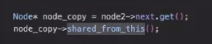

Умные указатели
Единственный владелец, совместное владение и наблюдение за объектом.
Умные указатели
https://habr.com/ru/companies/piter/articles/706866/
Умные указатели были созданы для устранения утечек памяти. По сути, они обеспечивают автоматическое управление памятью: когда умный указатель больше не используется, то есть выходит из области видимости, память, на которую он указывает, автоматически высвобождается. Традиционные указатели теперь также называют «обычными» указателями.
На самом деле это просто классы, которые оборачивают обычный указатель в свои недра и перегружают операторы -> и *. Благодаря этому трюку умный указатель имеет тот же синтаксис, что и обычный указатель. Когда умный указатель выходит из области видимости, срабатывает его деструктор и происходит очистка памяти. Эта техника называется Resource Acquisition Is Initialization (RAII): класс оборачивает динамический ресурс (файл, сокет, подключение к базе данных, выделенная память, ...), который должным образом удаляется/закрывается в своем деструкторе. Таким образом, вы гарантированно избежите утечки ресурсов.
Типы умных указателей в современном C++
- std::unique_ptr — умный указатель, владеющий динамически выделенным ресурсом;
- std::shared_ptr — умный указатель, владеющий разделяемым динамически выделенным ресурсом. Несколько std::shared_ptr могут владеть одним и тем же ресурсом, и внутренний счетчик ведет их учет;
- std::weak_ptr — подобен std::shared_ptr, но не увеличивает счетчик.
auto_ptr - древний предок unique_ptr запрещен в новом стандарте (не умеет копировать указатель)
std::unique_ptr
std::unique_ptr владеет объектом, на который он указывает, и никакие другие умные указатели не могут на него указывать. Когда std::unique_ptr выходит из области видимости, объект удаляется. Это полезно, когда вы работаете с временным, динамически выделенным ресурсом, который может быть уничтожен после выхода из области действия.
Как создать std::unique_ptr
std::unique_ptr<Type> p(new Type);Также можно создать std::unique_ptrs с помощью специальной функции std::make_unique, вот так:
std::unique_ptr<Type> p = std::make_unique<Type>(...размер или параметры...);Если есть возможность, всегда старайтесь выделять объекты с помощью std::make_unique.
class Robot {
private:
std::string name;
public:
Robot(std::string& n) {
this->name = n;
std::cout << "Robot " << n << " created" << '\n';
}
~Robot() {
std::cout << "Robot "<< this->name << " destroyed" << '\n';
}
void speak() {
std::cout << "Hello, I am " << this->name << '\n';
}
};
int main() {
std::string name1 = "Valera";
std::string name3 = "Sisa";
std::string name2 = "Epchtain";
std::vector<std::unique_ptr<Robot>> vec;
vec.push_back(std::make_unique<Robot>(name1));
vec.push_back(std::make_unique<Robot>(name2));
vec.push_back(std::make_unique<Robot>(name3));
for (auto& i : vec) {
i->speak();
}
}Почему std::unique_ptr нельзя копировать? Потому что он гарантирует единственного владельца ресурса.
std::shared_ptr
std::shared_ptr владеет объектом, на который он указывает, но, в отличие от std::unique_ptr, он допускает множественные ссылки. Специальный внутренний счетчик уменьшается каждый раз, когда std::shared_ptr, указывающий на тот же ресурс, выходит из области видимости. Эта техника называется подсчетом ссылок. Когда последняя из них будет уничтожена, счетчик станет равным нулю, и данные будут высвобождены.
распространённый подход automatic reference counter
счетчик хранится в control_block
Умный указатель такого типа полезен, когда требуется обмениваться динамически распределенными данными, точно так же, как это делается с обычными указателями или ссылками.
std::shared_ptr<Type> p(new Type);std::shared_ptr<Type> p = std::make_shared<Type>(...parameters...);Одна из главных особенностей std::shared_ptr — возможность отслеживать, сколько указателей ссылаются на один и тот же ресурс. Получить информацию о количестве ссылок можно с помощью метода use_count().
Для чего вообще нужен std::shared_ptr?
std::shared_ptr подходит для совместного владения, когда заранее неизвестно, какой владелец освободит объект последним.
class Person {
private:
std::string name;
public:
Person(std::string name) {
std::cout << "called constr " << name << '\n';
}
~Person() {
std::cout << "called distr " << name << '\n';
}
};
void PrintPerson(std::shared_ptr<Person> p) {
std::cout << p.use_count() << '\n';
}
int main() {
std::shared_ptr<Person> p = std::make_shared<Person>("Dima");
std::shared_ptr<Person> t = std::move(p);
std::cout << t.use_count() << '\n';
PrintPerson(t);
std::cout << t.use_count() << '\n';
}
called constr Dima
1
2
1
called distrweak_ptr
std::weak_ptr — это, по сути, std::shared_ptr, который не увеличивает счетчик ссылок. Он определяется как умный указатель, который содержит несобственную ссылку, или ослабленную ссылку, на объект, управляемый другим std::shared_ptr.
Этот умный указатель полезен для решения некоторых раздражающих проблем, которые нельзя решить с помощью необработанных указателей.
только от shared_ptr в момент возникновения цикла
С помощью std::weak_ptr очень легко решить проблему висящих указателей — тех, которые указывают на уже удаленные данные. Он предоставляет метод expired(), который проверяет, был ли объект, на который ссылается ссылка, уже удален. Если expired() true, исходный объект был где-то удален, и вы можете действовать соответствующим образом. Это то, что вы не можете сделать с необработанными указателями.
int main() {
std::shared_ptr<int> sp = std::make_shared<int>(42);
std::weak_ptr<int> wp = sp; // weak_ptr не владеет объектом
std::cout << "use_count: " << sp.use_count() << std::endl; // 1
if (auto locked = wp.lock()) { // пытаемся получить shared_ptr
std::cout << "Value: " << *locked << std::endl;
}
sp.reset(); // удаляем последний shared_ptr
if (wp.expired()) {
std::cout << "Object deleted\n";
}
if (auto locked = wp.lock()) {
std::cout << "Won't print\n";
} else {
std::cout << "Cannot access object anymore\n";
}
return 0;
}std::enable_shared_from_this
Он позволяет функциям-членам класса, экземпляр которого создан в std::shared_ptr, получить дополнительные сильные (shared_from_this()) или слабые (weak_from_this(), начиная с C++17) копии того std::shared_ptr, в котором он был создан. Вызывать shared_from_this() и weak_from_this() из конструктора и деструктора нельзя.
Из сырого объекта получать копию shared_ptr
